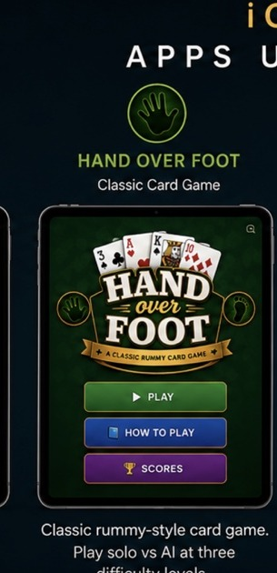

ARTEZIQ
Classic strategy card game
Hand Over Foot
A polished rummy-style card game inspired by Hand and Foot Canasta. Play solo against a built-in AI opponent at Easy, Club, or Shark difficulty on a green-felt card table. Designed for tablets and computers, while also supporting smartphones.
Under Development